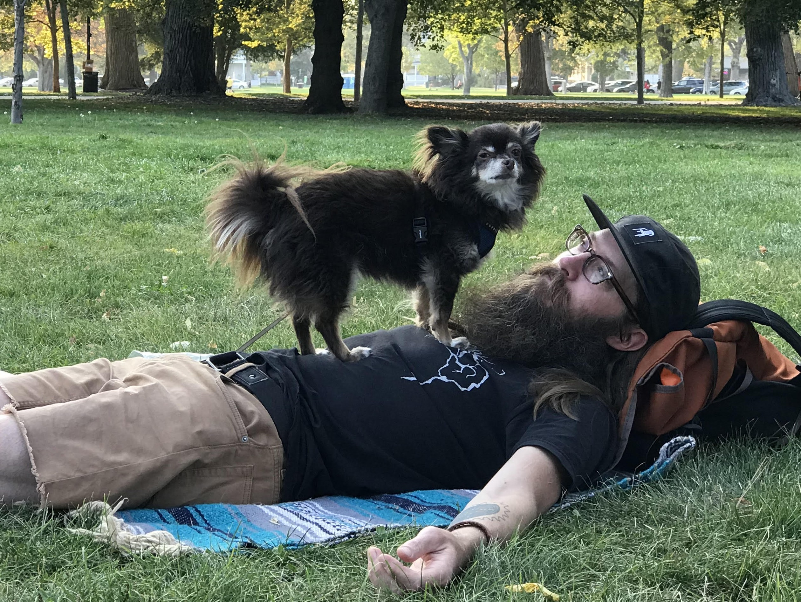

About Me
New web developer with a passion for life-long learning, problem solving and contributing to my local and professional communities
When thinking about a career change, I wanted to find something that would not only be exciting and challenging, but also utilize the skills developed in previous work experience and play well with my personality. I found that in web development.
Coding Experience
Frontend
 React / React Native
React / React Native
 Angular
Angular HTML5
HTML5 CSS3
CSS3 Bootstrap
Bootstrap
- Responsive Design
- Web Accessibility
Backend
 Node.js
Node.js Express
Express- REST APIs
 MongoDB
MongoDB Firebase
Firebase- Serverless Architecture
Languages & Tools
 JavaScript
JavaScript
 Git / GitHub
Git / GitHub- Parcel
- Expo
 TypeScript
TypeScript
- Test-Driven Development
- OAuth2
Concepts
- Data Visualization
- Progressive Web Apps (PWA)
- Offline Caching
- Cross-Browser Testing
- Agile Development / SCRUM
Past Work Experience
With a background in Machining / CNC Programming and a wide variety of roles in the bicycle industry, I have gained a number of valuable and transferable skills. Mechanical problem-solving, customer-facing work, precision machining and attention to detail, coupled with my innate curiosity of how things work, eagerness to learn, humility, empathy and strong teamwork mentality will help me become a well rounded and valuable asset to any Web Development team.
| Skills | Years | Expertise |
|---|---|---|
| Bicycle mechanic | 23 | Advanced |
| Customer Service | 10+ | Advanced |
| Machinist / CNC | 5 | Intermediate |
A little about me
Originally from Minneapolis, Minnesota, I lived in Utah before moving to Tucson in 2024 with my partner, Audrey, and our 2 dogs, Leo the Chihuahua and Falkor the Great Pyrenees. In my free time, I get my recharge through cycling, rock climbing, exploring the desert with my partner and dogs, refilling my hummingbird feeders and healthy living.

Thanks for reading, and don't hesitate to CONTACT ME or check out some of my projects on my WORK PAGE!